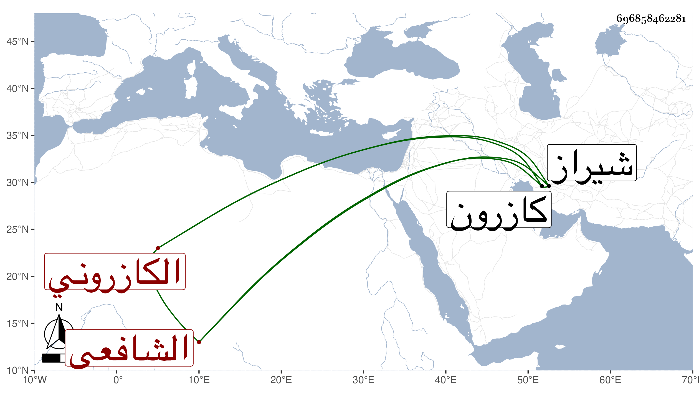

0902Sakhawi.DawLamic.ITO20230111-ara1.EIS1600.696858462281
Biography ID: 696858462281
98
بيان بن عيان بن بيان الكاسكاني الكازروني والأولى قرية منها ، الشافعي والد عيان الآتي . ولد بكازرون في صفر سنة ثلاث وعشرين وثمانمائة ونشأ فخدم العلم وترقى في فنونه لغايات بديعة بحيث كان يقرئ مشكلاته ثم انتسب للسيد صفي الدين وأضرابه وحج إلى أن حصلت له ماخوليا فزعم أنه الحارث الذي يوطئ للمنصور مقدمة المهدي إلى غيرها من الخرافات ككونه خاتم الأولياء بل تكلم بكفريات كثيرة وهجره المشار اليهم لذلك مع أنه لو خرج لما تخلف عنه كبير أحد من أهل تلك النواحي لمزيد اعتقادهم فيه وإجلالهم له ولكن كفه الله بل يقال إنه سكن وتاب ورجع في مرض موته . ومات بشيراز في آخر جمعة من شعبان سنة خمس وتسعين .
